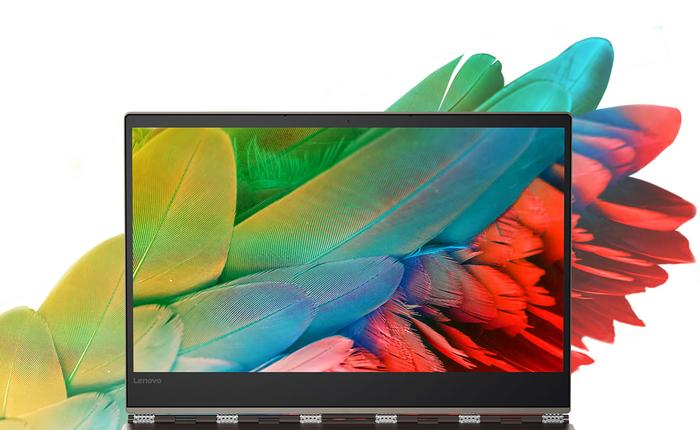
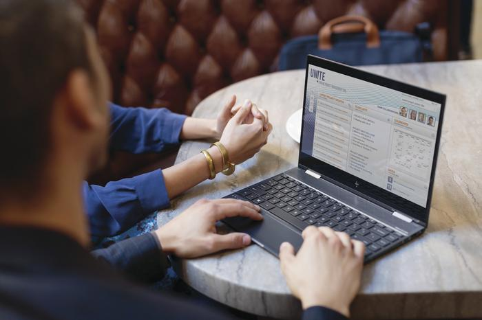
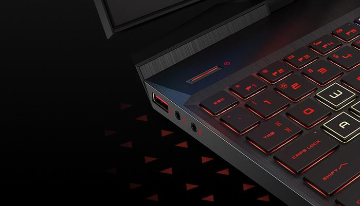

Other than specifications, here are other stuffs you would want
to consider when getting your next laptop
A set of criteria that everyone should consider before splurging on a new device.
1. Size
When it comes to laptops, size matters.Depending on what you plan to be doing with your next laptop, you’ll want to make sure you pick the size that’s the right fit for you. Size isn’t like the RAM or ROM of a laptop, you can’t upgrade it later. You’re locked into whatever you select up-front, so choose wisely.
Laptops sizes tend to start at 11.6-inches and go all the way up to 17.3 inches. Most brands and OEMS like HP, Dell, ASUS and Acer tend to offer three display sizes - 13.3-inch, 15.6-inch and 17.3-inches. However, some vendors do sell laptops that fall outside these sizes including 11.6-inches, 12.5-inches and 14-inches.
Obviously, if portability is your priority, you’ll want to go for a smaller sized Windows laptop. They tend to be thinner and lighter than their larger counterparts. Look for laptops that have a screen that is either 12.5-inches or 13.3-inches in size, and a weight between 1kg and 1.5kgs.
However, keep in mind that smaller-sized 13.3-inch machines often don’t support the same high-end Intel Core i7 CPUs or discrete graphics cards you’ll be able to find in their 15.6-inch counterparts. Most of the time, they’ll also feature a less-robust selection of ports. If the kind of work you intend to be using your new laptop for requires a larger display or standalone graphics power, you’ll probably need to look at a larger size.
Beyond specific sizings, there are several different classes of laptop to choose from. Ultrabooks tend to favor a slim and lightweight form-factor over high-end performance.
2. Screen Quality
Since you’ll probably end up staring at your laptop screen hours at a time, you’ll probably want to make sure you get a screen that is comfortable to look at and use.To start with, you’ll have to consider whether you want your next laptop to have a touchscreen. These days, touchscreens are very common and they can make some tasks easier than others. Unfortunately, they can also add a glossiness to the display which is sometimes undesirable. Glossy screens lead to reflections, which are a definite negative if you’re gaming, watching content or editing images and video content. For these reasons, you might want to consider a laptop that doesn’t have a touchscreen. 
Next up, be sure to look at the resolution on any laptop you’re thinking of buying. A 1920x1080-pixel resolution (Full HD) should be considered if you want plenty of space to line up windows and keep things in view.
Select modern laptops also now offer 4K resolutions. However, these high-end display panels are generally a costly add-on to an already-expensive product. They're only really going to be worth it for those who really need them, like content creation professionals.
Photographers and videographers will also want to privilege laptops that offer better color accuracy and support wider color gamut and HDR standards over those that don't.
Meanwhile, if you’re a gamer, it’s also worth taking the time to check the refresh rate on the display of any potential laptop. A faster refresh rate can often provide a sometimes provide a competitive advantage in online games, as it enables a smoother and more responsive play experience.
Lastly, viewing angles are extremely important. A laptop screen that touts IPS (in-plane switching) technology offers the widest viewing angles and the best user comfort. Chances are you’re not always going to be using your laptop in its natural habitat, so a laptop with an IPS display is usually preferred over the opposite.
If possible, take the time to go into a store and see the screen for yourself. Otherwise, rely on multiple reviews to get a good overview of the product and whether or not its screen will be able to suit your needs.
3. Keyboard Quality
For long typing sessions, you’ll need to get a laptop that has a comfortable keyboard. You don’t want to get a keyboard that packs in every key under the sun (think keyboards that have squished in number pads) because that can translate to a poor overall user experience when hunting for specifics like the arrow or delete keys.
You want a keyboard that has a comfortable layout with full-sized keys and some space around the arrow keys. The keys should have adequate travel on the downstroke and snappy responsiveness when you let them go.
Make sure the keyboard is also backlit, so that you can type with an easier view on the keys in dimly lit environments.
4. Battery Life
Manufacturer-quoted battery life is almost never indicative of what the real-world experience of using a laptop is like. There are simply too many variables that affect battery life. There is the screen brightness, the screen resolution, the number of applications you have running in the background plus whether or not you actively remain connected to Wi Fi networks or Bluetooth devices.The operating system a laptop runs on can also play a major role in determining battery life. It’s for this reason that ultrabooks and convertibles running on Chrome OS tend to offer superior battery life than those running on Windows 10.
If you run programs that need lots of processing, stream lots of online video, play graphics-intensive games or if you transfer lots of files over a wireless network, then your battery will drain a lot sooner than what the vendor has quoted.
A good practice here is to look at the rating of the battery in Watt-hours (Wh) or milliamp-hours (mAh). The larger these figures are, the longer the battery can last. For a 13.3in Ultrabook, for example, a battery with a rating from 44Wh to 50Wh will give you the best results.
5. Ports
These days, if a laptop has less than one USB 3.0 port on it, you probably ought to look at buying another laptop. Ideally, you should look for a laptop that has at least a couple of these USB 3.0 ports.In addition to the baseline utility you get from USB ports (which allow you to plug in an external hard or SSD drive and backup your data or use conventional mouse or a fancy keyboard with your laptop), USB 3.0 is about ten times faster than USB 2.0. This means that data transfers over USB 3.0 take significantly less time.

Many modern peripherals also tend to deliver the best performance on or require USB 3.0 to function at all.
If possible, you should try and take things a step further and go for a laptop with USB 3.1 ports. USB 3.1 allows for a throughput of up to 10 gigabits, double that offered by USB 3.1.
If you’re ready to embrace USB Type-C, Thunderbolt 3 ports offer an even better option. Thunderbolt 3 ports have a peak data transfer speed of 40 gigabits per-second.
6. Fingerprint reader and TPM
Fingerprint readers are great for logging into mobile devices and the latest Windows 10 Operating System makes further use of them with its Windows Hello system.People can guess your password, but few can fake a fingerprint. In order to keep the contents of your laptop secure, a portable PC with a fingerprint reader is usually the best way forward.
7. Build Quality
No matter how careful we are, most laptops are inevitably going to find themselves, dropped, thrown and knocked around by the rigors of everyday use.To counteract this, some modern laptops are ruggedised to withstand rain and dust. Some are built especially for the brutal educational environments - and come with military-grade protection certifications.
Source of this article is by PCWorld